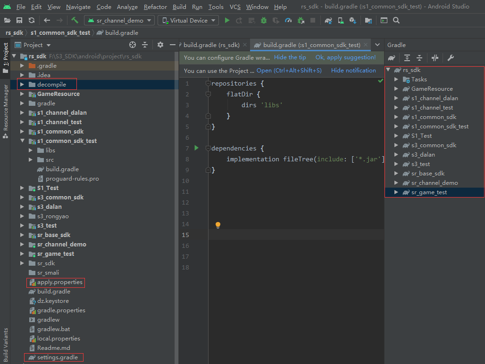

前言
初衷s1和s3出包的项目是Eclipse，后更新为Android-Studio，使用Android模块化对项目进行统一的划分。
SDK分类
SDK划分主要是以我们打包环境来区别。
打包环境有2种，正式环境对应正式sdk,测试环境对应测试sdk。
- 正式环境
正式包，用于线上，一般是接了渠道的sdk，具备了登录，充值，实名等功能。 - 测试环境
测试包，内部测试，不包含渠道的sdk，不具备渠道sdk的功能，主要供于游戏内部测试。
SDK的结构
为了方便理解SDK划分和结构，我们拿S1项目举个例子，可以先看下这张图

无论是测试SDK或者正式SDK都划分为2个模块,一个为common模块，一个channel模块。
这里我们以S1正式SDK举例.
正式SDK包含2个模块，也就是是s1-common-sdk,s1-channel-dalan。
common库结构图

!!!切记common编译库包含跟unity的的游戏库一致，否则游戏会出现奇怪的问题。
channel结构图

我们把2个目录整合一下，其实正式包channel.jar的目录只是把原本的sdks下的GameSDK和HyGameApplication取出，然后单纯作为一个jar。而其他代码是作为sdk的公共库(一般情况下不变)。
1 | –com |
安装环境
目前工作环境正常下的版本，后续可能会随着as版本升级而发生变动，以下版本不作为唯一。
1 | AndroidStudio-version-4.1.1 |
项目介绍
之所以用模块化开发，是为了后续几点考虑
- 多团队并行开发测试；
- 模块间解耦、重用；
- 可单独编译打包某一模块，提升开发效率
而我们的项目刚好是要打包某一模块，提升开发的效率。
as项目的配置 — 生成as模块

我们需要在左侧红色方框的2个配置文件内配置好
apply.properties
1 | s1_channel_dalan = com.android.library |
setting.gradle
1 | include('s1_channel_dalan') |
以上2个配置之后，点击Sync Project with Gradle Files
会在右侧生成gradle模块(以模块的名称来命名)。如as模块右侧截图。在这里的项目都是生成好了，有需要的话按照以上方式添加新的模块即可。
读取的代码在主目录的build.gradle，这里不做展示。
decompile转换工具库说明
as截图内左上角的编译的目录是 decomplie,是转化文件格式的工具类，主要是用于 .jar文件,smali文件,.dex文件3者的转换。
as项目内已编写好gradle脚本(在根目录的gradle)，通过gradle调用decompile的python的脚本(smali.py)，然后smali.py调用相关的命令,生成jar包。
1 | –decompile ： 打包bundle的时候，自动生成 |
工程流程 — 如何打包生成jar
as项目内的android模块通过decompile转换库调用python命令,把java目录下的代码打成.jar包，这里打的jar包是不包含lib，也就是只包含java目录下的代码，然后替换到打包工具的对应的目录，然后打包工具生成apk。
我们这里举例说明一下，假设我们需要生成s1-common-sdk的jar包。

1.右侧Gradle模块，是根据左侧模块文件夹的文件名生成的，然后我们点击a_makeJarLib_smali即可在文件下生成对应模块的jar。

2.生成jar后只要提交到145远程机的打包工具对应的目录即可。
3.然后使用打包工具生成apk，对apk进行测试
注意事项
1.在生成jar的时候，一定分清楚对应的处理的模块，打成jar之后可以通过第三方工具，查看对应的层级代码，避免在提交打包工具的时候提交错jar，减少低成本的问题。
2.as模块common库的编译时要提前检查，左侧as模块的Lib目录下的unity版本是不是跟打包工具的unity版本库一致。
如：S1-PIUS使用的unity库是2018.jar,那么common库的模块下的unity版本也要是2018的才行，不然提交后打包工具后，会因为编译后的字节码不一致而导致黑屏或者是卡顿等其他奇怪的问题。
3.在项目编译时，该工具的会先提前对模块内的代码进行检查，检查通过后才可编译，在一定程度减少容错率，无法编译时，先提前检查代码。
局限性及可扩展性
扩展性：在此项目上我在满足基本项目打包的要求上，新增了a_makeJarChannel_smali的命令:
可以把包含Lib的依赖和gardle远程依赖统一分成合成jar.
同时对生成好的jar拆分为smali，dex，改功能针对发行要求，在mac环境上已测试通过。
后续可继续增加扩展smali分包的功能